Building construction teaches learners how houses, schools, offices and other structures are planned, built and completed safely and durably for everyday use.
Introduction to Building Construction
Building construction is the practical art and science of creating strong, safe and useful structures from design ideas to completed buildings. It begins with planning, site selection and measurement, then moves through material selection, foundation work, structural framing, finishing and final inspection. A builder must understand both technical knowledge and careful workmanship because every stage of construction affects the strength, beauty and life span of the building. Construction is not only about lifting blocks or fixing beams; it is also about solving problems, working in teams and making sure the final structure meets the needs of the people who will use it. In schools, students learn that building construction connects mathematics, design, science, safety and creativity in one discipline.
The subject is important because buildings provide shelter, storage, education, health care and places of worship. When a structure is well constructed, it protects people from weather, provides comfort and supports economic development. This is why builders must pay attention to detail from the first sketch to the last coat of paint. Good construction also saves money because a properly built structure requires fewer repairs and lasts longer.
Building construction turns ideas, materials and effort into lasting shelter and structure.
Materials and Tools
Building construction uses many materials such as cement, sand, gravel, bricks, concrete blocks, steel bars, timber, roofing sheets and paint. Each material has its own purpose and must be chosen according to the design, weather conditions, cost and expected strength of the building. Cement and concrete provide compressive strength, while steel adds tensile strength where stretching forces are present. Timber is often used for doors, frames and temporary supports because it is easy to cut and fix. Roofing sheets and tiles are selected for weather protection, durability and appearance. Builders also use tools such as trowels, spades, hammers, levels, measuring tapes, saws, plumb bobs and drills to carry out work accurately.
Learning the properties of common construction materials is essential because the wrong choice can lead to cracks, weak joints, moisture problems or early failure. A good builder must understand the difference between materials that are strong in compression and those that are strong in tension. This knowledge helps the builder plan better and choose the most practical and economical materials for the job. Tools must also be handled properly, because sharp, damaged or poorly maintained tools can cause injuries and lower the quality of workmanship.
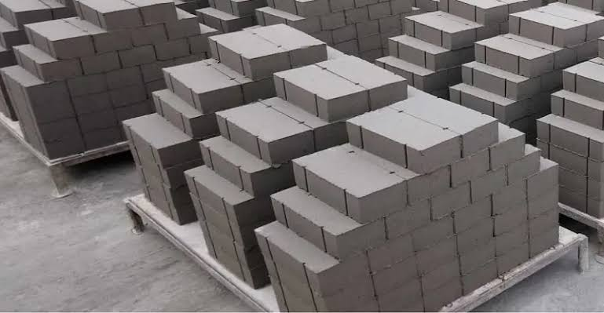
The right material and the right tool make construction safer, stronger and more efficient.
Basic materials
Basic materials form the backbone of every building project. Cement binds particles together and hardens into a strong mass when mixed with water, sand and aggregates. Sand helps to fill spaces and improve workability, while gravel or crushed stone gives concrete its bulk and strength. Bricks and blocks are used to create walls and partitions, and their size and quality influence the speed of construction and the appearance of the finished structure. Timber is still important because it can be used for framing, roofing support and internal fittings. Paints and sealants protect surfaces from moisture, sunlight and wear, making a building look neat and remain durable for longer.
Each building material must be stored and used properly to avoid waste and damage. Wet cement can lose quality if left exposed, while timber can rot if kept in damp conditions. Blocks and bricks may crack if dropped or stacked badly. Understanding these basic materials gives learners a strong foundation in construction practice and helps them appreciate the relationship between materials and performance. This knowledge is the starting point for more advanced topics such as structural design, estimating and site supervision.
Basic materials determine the strength, appearance and durability of a building.
Tools and equipment
Construction tools are grouped into measuring, cutting, fixing, shaping and finishing tools. Measuring tools such as tapes, rules and levels help workers set out the building correctly and ensure that walls and floors are straight. Cutting tools such as saws and cutters make it easier to shape timber and sheet materials. Fixing tools such as hammers, screwdrivers and spanners join parts securely, while finishing tools such as brushes, trowels and planes help create smooth and attractive surfaces. Equipment like mixers, scaffolds and ladders also improve efficiency and reduce the amount of manual effort required on site.
A skilled construction learner must know how to select the right tool for the right task and maintain it properly. Safe handling of tools is as important as knowing how to use them. Tools should be checked before use, cleaned after use and stored in the correct place to prevent accidents and damage. Good tool habits reduce waste, improve speed and raise the standard of finished work. These practices are important in both training workshops and real construction sites.
Accurate tools and careful handling help builders produce precise and safe work.
Site Preparation and Foundations
Before any building is erected, the construction site must be prepared carefully. This involves clearing the ground, removing waste, checking the slope of the land and marking out the exact position of the building. Surveying equipment and pegs are used to set out the layout so that the structure is placed correctly and the walls will align with the design. The soil is then tested to find out whether it can support the load of the structure. If the ground is weak, the builder may need to improve it before construction begins. Good site preparation prevents future problems such as settlement, cracking and drainage failure.
Foundations are the base of a building and they transfer the weight of the structure into the ground. Different foundations are used depending on the soil type, building size and load. Strip foundations are common for small buildings, pad foundations support isolated columns, and raft foundations are used where the soil is weak over a wide area. A strong foundation prevents the building from sinking or collapsing and helps distribute loads evenly. The choice of foundation is one of the most important decisions in construction because it affects the safety and stability of the whole structure.
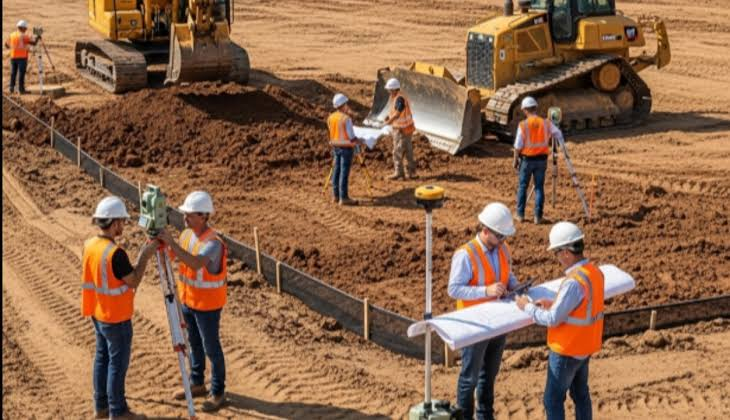
A solid foundation is the quiet strength behind every durable building.
Site layout
Site layout is the process of marking out the building lines and locating important points such as corners, walls, drains and access routes. This is done carefully so that the building occupies the correct position on the site and does not conflict with boundaries or service lines. Builders use ropes, pegs, measuring tapes and instruments to transfer the design from paper to the ground. Accurate layout reduces waste and helps the structure fit the intended plan. A small mistake at this stage can lead to major problems when walls, foundations and roof members are fixed.
Site layout also includes planning for temporary facilities such as storage spaces, material stacks, working paths and water points. These practical arrangements help keep the site organised and safe. Good planning during layout saves time during the construction process because workers know where materials should be placed and how movement around the site should be managed. In many projects, site layout is the first visible sign of disciplined and efficient work.
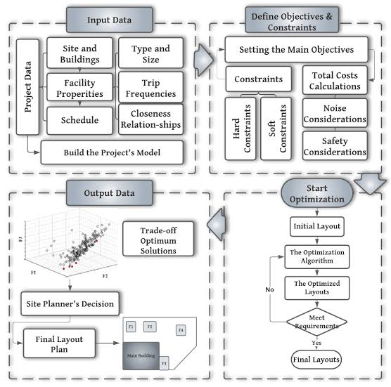
Good layout turns a design plan into an orderly and accurate building site.
Foundation types
Foundation types vary according to the type of soil and the kind of structure being built. Strip foundations are used for load-bearing walls and are common in small houses because they are simple and economical. Pad foundations are used where columns carry heavy loads and need support at specific points. Raft foundations spread the weight of the building over a larger area, which is helpful when the soil is weak or the structure is heavy. Pile foundations are used where the ground near the surface is too weak to carry the building load and deeper support is required. Builders must choose the proper foundation after studying the ground conditions and the building design.
The foundation must be built accurately and with proper reinforcement where necessary. Concrete should be mixed and placed correctly, the correct depth should be achieved and the base should be level. Mistakes in foundation work can lead to cracks, uneven floors and serious structural damage later. This is why foundation work is often seen as one of the most important stages in building construction. It is the stage that determines whether the building will stand firmly for years or suffer problems from the start.
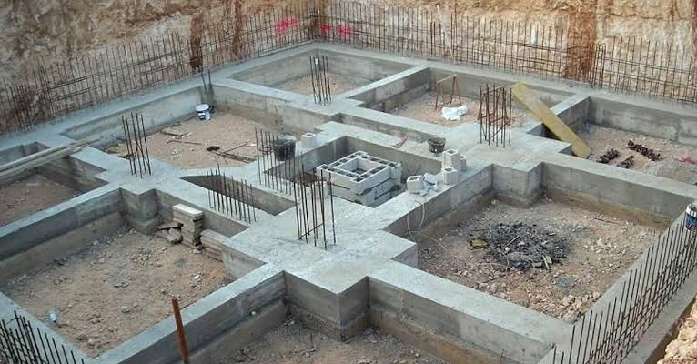
The foundation is the hidden support system that keeps the whole building stable.
Walls, Roofs, and Structural Elements
After the foundation is complete, construction moves up to walls, beams and roof supports. Walls provide enclosure, privacy and protection from wind and rain. They may be built with blocks, bricks or reinforced concrete depending on the design, thermal needs and budget. In many buildings, walls are strengthened with columns and beams to resist loads and improve stability. A well-built wall needs proper bonding, correct alignment and enough strength to carry the weight above it. Roofs are equally important because they protect the building from weather and keep internal spaces dry and comfortable.
Roof structures can be made from timber trusses, steel trusses or concrete slabs. The roof must be strong enough to support its own weight plus wind, rain and other live loads. Coverings such as metal sheets, tiles or concrete roofing units are then fixed to make the building weatherproof. During this stage, builders must also consider ventilation and drainage so that water does not collect on or around the structure. Structural elements must be checked carefully because any weakness here can affect the whole building.
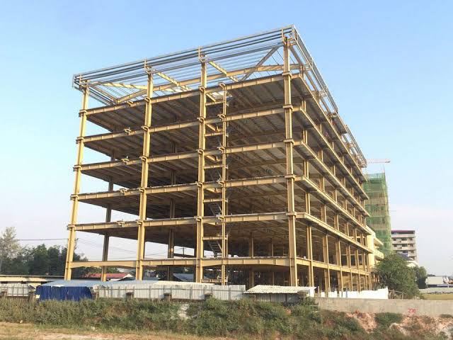
Strong walls and roofs give a building its shape, enclosure and protection.
Walls
Walls are divided into load-bearing walls and non-load-bearing walls. Load-bearing walls support roof and floor loads and must be carefully built to carry weight safely. Non-load-bearing walls are used mainly to divide spaces and create rooms, and they may be lighter in construction. Blockwork and brickwork must be laid in straight lines with proper joints to avoid weak points. Mortar must be mixed well and applied evenly so the wall gains strength and the surface remains neat. Openings for doors and windows must be planned so that they do not weaken the wall unnecessarily.
Good wall construction also involves insulation, damp protection and finish quality. Builders may add plaster or render to improve appearance and prevent water penetration. Internal walls may be painted, tiled or panelled depending on their use. The quality of wall work strongly affects the comfort and durability of the building. A wall that is level, strong and well finished contributes greatly to the overall quality of the structure.
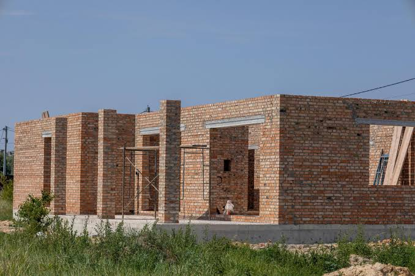
Walls create the rooms, strength and protection that define a building.
Roofing
Roofing is the part of construction that protects the building from direct weather exposure. The roof frame is assembled first, then covered with suitable roof sheets or tiles. Purlins, rafters and trusses are arranged to carry the roof load safely and transfer it to the walls. The pitch or slope of the roof is important because it helps rainwater drain off quickly and reduces the risk of leakage. With good roofing, the interior of the house remains dry, cool and protected from harsh sunlight.
Roofing must also be attached carefully so that it withstands wind pressure and the forces of heavy rain. Fasteners, overlaps and flashing are important details that prevent water from entering through joints. Builders must consider the local climate when selecting roofing materials, because a roof that works well in one region may fail in another. Good roofing is therefore a combination of sound design, strong structure and careful installation. This final layer of protection is essential for the comfort and longevity of the building.
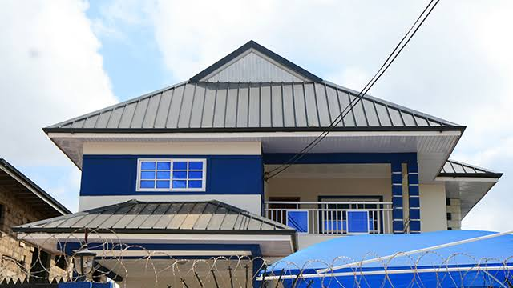
A reliable roof turns a building into a safe and comfortable shelter.
Finishes, Services, and Interior Works
Once the main structure is complete, the building is fitted with finishing touches that make it comfortable and practical. Plastering, screeding, painting, tiling and polishing improve the look of walls, floors and ceilings. These finishes also help protect surfaces from dust, water and wear. Doors and windows are fitted to provide access, ventilation and security. In many buildings, the finishing stage reveals the quality of the workmanship because poor finishing can make even a strong structure look unsightly.
Building services such as water supply, sanitation, electricity and ventilation are also installed at this stage. These systems make the building functional and suitable for living or working. Electric cables must be fixed safely, pipes must be placed correctly and drains must lead to proper disposal points. The placement of sockets, switches, taps and light fittings must be planned carefully to meet the needs of the user. When services are installed well, the building becomes more convenient, healthy and efficient.
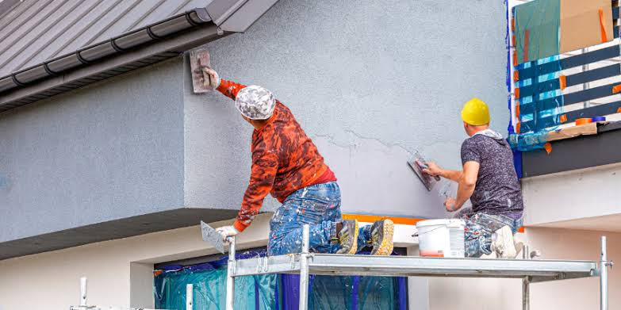
Finishes and services transform a shell into a complete, usable and attractive building.
Finishing work
Finishing work includes plastering, painting, flooring, tiling and the installation of fixtures. Plaster creates a smooth surface on walls and ceilings, while paint protects the surface and improves the interior appearance. Floor finishes such as screed, tiles or polished concrete make the floor durable and easy to clean. Skilled finishers pay attention to detail because visible defects are often noticed immediately by occupants. The final quality of a building is judged not only by its structure but also by the beauty and neatness of its finishes.
Finishing work also gives the building personality and comfort. Soft colours, well-laid tiles and neatly fitted fittings can make spaces more attractive and welcoming. The choice of finishing materials should consider the use of the room and the budget available. When done carefully, finishing work increases the value of the building and improves the user experience. It is the stage that turns a construction project into a completed environment that people can enjoy.
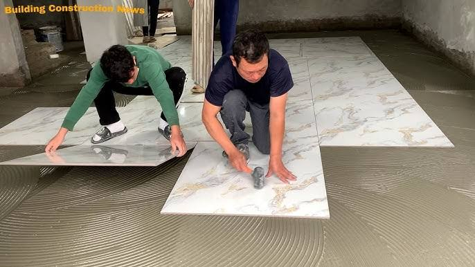
Beautiful finishing work gives a building its final character and comfort.
Building services
Building services make a structure functional and modern. Water supply systems bring clean water into the building, drainage systems remove wastewater and electricity systems provide light and power. Ventilation and air circulation are also important because they improve comfort and reduce dampness. In larger buildings, heating, cooling and fire safety systems may be added to meet modern standards. These systems must be installed according to rules and tested before the building is handed over.
A building that lacks proper services is difficult to live or work in. Poor plumbing can lead to leaks and health problems, while poor electrical work can create danger. For this reason, builders and technicians must cooperate closely during installation. Good building services are not just about convenience; they are also about health, safety and long-term usefulness. The planning of services should begin early so that pipes, cables and ducts are placed without creating future conflicts.
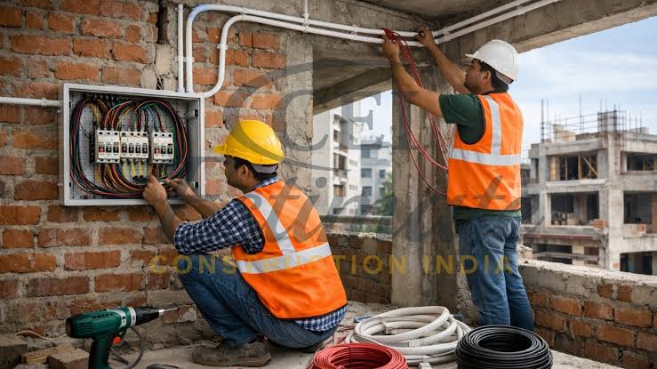
Good services make a building liveable, safe and efficient for everyday use.
Safety, Planning, and Careers
Safety is one of the most important parts of building construction. Workers must wear protective clothing, use tools correctly and avoid careless actions around scaffolds, ladders and heavy materials. Construction sites can be dangerous because of falling objects, sharp tools, dust, noise and moving equipment. A strong safety culture helps prevent injuries and ensures that work is completed with discipline and care. Site supervisors must also enforce safety rules and keep emergency procedures clear and practical.
Planning is equally important because every project needs a clear sequence of work, a realistic budget and a reliable supply of materials. Good planning helps workers stay organised, reduces delays and prevents waste. In the modern world, building construction also offers many career opportunities such as mason, carpenter, plumber, electrician, site supervisor, quantity surveyor, architect and construction manager. Learners who study the subject gain skills that can lead to self-employment, employment in the building industry or further education in technical and professional fields.
Safe work, good planning and strong skills create successful buildings and rewarding careers.
Safety practice
Safety practice means following rules that protect workers, visitors and the public. Hard hats, boots, gloves and safety glasses are common protective items on a construction site. Workers should never stand on unstable platforms or use defective tools. Good housekeeping is also part of safety because scattered materials and clutter can cause trips, falls and accidents. Safety checks should be carried out regularly so that hazards are noticed before they cause harm.
Team members must also communicate clearly, especially when lifting heavy materials or working at height. A warning signal or clear instruction can prevent serious injury. Safety is not only about personal protection but also about protecting the quality and progress of the work. When safety is taken seriously, projects move forward smoothly and workers return home healthy at the end of the day. This is one reason why safe practice is treated as a core part of construction training.
Safety practice protects lives, time and the quality of construction work.
Career opportunities
Building construction opens many career paths for learners with practical skills and a strong work ethic. A student can become a mason, carpenter, plumber, electrician, painter, site supervisor, estimator or construction technician. Some learners choose to start small businesses in masonry, roofing or general maintenance, while others continue their studies in architecture, civil engineering or project management. The construction industry also supports related fields such as interior design, quantity surveying and materials supply. These careers often provide steady demand because buildings are always needed in communities and industries.
Studying building construction also develops important life skills such as planning, teamwork, precision and responsibility. These qualities are useful not only in construction but also in everyday decision-making and entrepreneurship. A learner who understands building construction can appreciate the effort behind homes, schools, hospitals and roads. This subject therefore offers both practical knowledge and future opportunities for personal and professional growth. It is a valuable field for anyone interested in creating lasting structures that improve society.
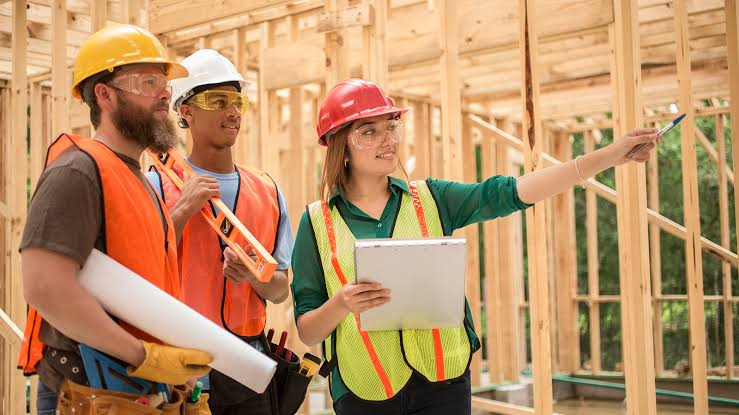
Building construction leads to practical careers that shape homes, communities and the future.